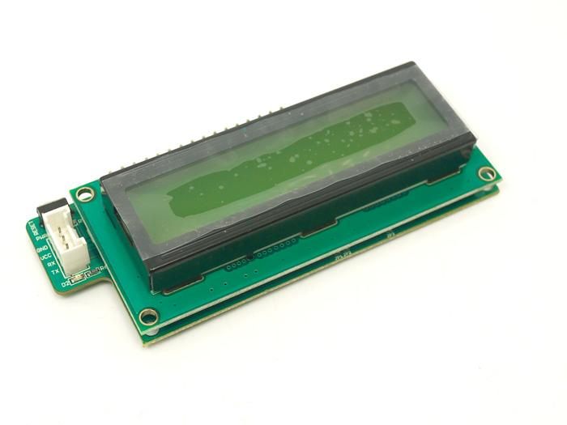
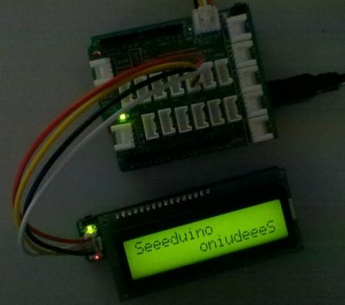
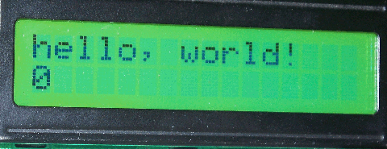
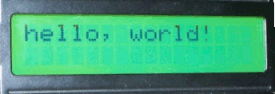
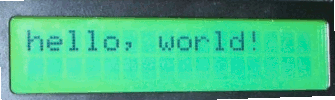
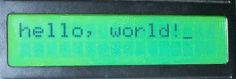
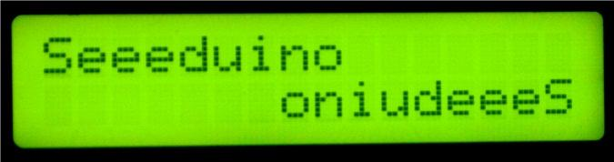

Grove - Serial LCD V1.0 is the new version of our serial LCDs. Attached on a single board is a 16x2 LCD and an embedded circuit based around a PIC HD44780. The on-board PIC takes a TTL serial input and prints the characters it receives onto the LCD. The library also allows for a number of special commands so you can clear the screen, adjust the backlight brightness, turn the display on/off, and more.
This LCD makes for a great gift, because it can be used for so many different projects!

| Item | Min | Typ | Maxi | Unit | |
|---|---|---|---|---|---|
| Operation voltage | 4.7 | 5 | 5.5 | V | |
| Communication Protocol | UART | - | |||
| Backlight Control | Yes | - | |||
| Working Current | Backlight ON | 70 | 75 | 80 | mA |
| Backlight OFF | 15 | 20 | 25 | mA | |

Serial LCD library provides a rich set of APIs to interact with Serial LCD Module. All operations that could be performed with normal LCDs could be achieved by sending commands and data serially. The APIs are designed similar to LiquidCrystal library of Arduino, for instant migration to Serial LCD driver. Interaction with Serial LCD module begins with initialization,wherein the Serial LCD module sends instruction to the MCU to begin communication. After intitialization, the LCD gets into Working mode, where it starts accepting commands and data for display. The commands and responses involved in the interaction are summarized at [[1]]
Download the SerialLCD Library and Unzip it into the libraries file of Arduino IDE by the path: ..\arduino-1.0.1\libraries, then you can play with your own display system.
If you have Arduino 1.0 or later, NewSoftSerial is included in the Arduino core (named SoftwareSerial).
Note：When you have connected Serial LCD to Grove and downloaded the example to the Seeeduino/arduino, make sure you reset the Seeeduino/arduino first.
Demo 1: Hello World
This sketch prints "hello, world!" on the first row and time in seconds, elapsed from RESET on second row. This uses begin(),
setCursor(row,col) and print() functions.
// include the library code: #include <SerialLCD.h> #include <NewSoftSerial.h> //this is a must // initialize the library SerialLCD slcd(11,12);//this is a must, assign soft serial pins void setup() { // set up slcd.begin(); // Print a message to the LCD. slcd.print("hello, world!"); } void loop() { // set the cursor to column 0, line 1 // (note: line 1 is the second row, since counting begins with 0): slcd.setCursor(0, 1); // print the number of seconds since reset: slcd.print(millis()/1000,DEC); }
OUTPUT:

Demo 2: Intermittently display
This sketch prints "hello World!" to the LCD and uses the display() and noDisplay() functions to switch on and off the display.
// include the library code: #include <SerialLCD.h> #include <NewSoftSerial.h> //this is a must // initialize the library SerialLCD slcd(11,12);//this is a must, assign soft serial pins void setup() { // set up slcd.begin(); // Print a message to the LCD. slcd.print("hello, world!"); } void loop() { // Turn off the display: slcd.noDisplay(); delay(1000); // Turn on the display: slcd.display(); delay(1000); }
OUTPUT:

Demo 3: Blink
This sketch prints "hello World!" to the LCD and makes the cursor block blink with Blink() and noBlink() functions.
// include the library code: #include <SerialLCD.h> #include <NewSoftSerial.h> //this is a must // initialize the library SerialLCD slcd(11,12);//this is a must, assign soft serial pins void setup() { // set up : slcd.begin(); // Print a message to the LCD. slcd.print("hello, world!"); } void loop() { // Turn off the blinking cursor: slcd.noBlink(); delay(1000); // Turn on the blinking cursor: slcd.blink(); delay(1000); }
OUTPUT:

Demo 4: Cursor Display
This sketch prints "hello World!" to the LCD and uses the cursor() and noCursor() methods to switch on and off the cursor.
// include the library code: #include <SerialLCD.h> #include <NewSoftSerial.h> //this is a must // initialize the library SerialLCD slcd(11,12);//this is a must, assign soft serial pins void setup() { // set up slcd.begin(); // Print a message to the LCD. slcd.print("hello, world!"); } void loop() { // Turn off the cursor: slcd.noCursor(); delay(1000); // Turn on the cursor: slcd.cursor(); delay(1000); }
OUTPUT:

Demo 5: Display Text Flow Direction and Cursor Position
This sketch prints "Seeeduino" twice to the LCD. This sketch uses the setCursor(col,row), leftToRight() and rightToLeft() methods
to demonstrate cursor position and text flow direction (left-to-right and right-to-left).
// include the library code: #include <SerialLCD.h> #include <NewSoftSerial.h> //this is a must // initialize the library SerialLCD slcd(11,12);//this is a must, assign soft serial pins void setup() { slcd.begin(); // Turn on the backlight slcd.backlight(); // Switch on the cursor: slcd.cursor(); } void loop() { //Set cursor at 0th Row, 0th Column (Top-Left Corner of LCD) slcd.setCursor(0,0); //Set the text flow direction left-to-right slcd.leftToRight(); slcd.print("Seeeduino"); //Set cursor at 1st Row, 15th Column (Bottom-Right Corner of LCD) slcd.setCursor(15,1); //Set the text flow direction right-to-left slcd.rightToLeft(); slcd.print("Seeeduino"); }
OUTPUT:

Serial LCD library provides complete set of instruction to exercise the capabilities of LCD1602. SerialLCD driver uses NewSoftSerial library for implementing the UART logic. The access to the APIs are made by first creating an object of SerialLCD class by providing the software serial ports (Rx and Tx):
SerialLCD slcd(11,12); // Assign 11 and 12 as RxD and TxD lines of Software Serial Port.
Function Description:
1. begin()
This function is used for initializing the Serial LCD module.
Example：
slcd.begin(); // Intialize LCD
2. print()
Prints the text to the LCD. It is of two forms:
Example：
slcd.print(data); // Data can be any text slcd.print(data,BASE); // BASE can be BIN, DEC, OCT or HEX slcd.print(float_data,2);//show float data,Decimal digits(1-3)
3. clear()
Clears the display.
Example:
slcd.clear(); // Clear the Screen
4. home()
Sets the cursor to top-left corner.
Example:
slcd.home(); // go to home
5. noDisplay()
Switch off the display without clearing the RAM.
Example:
slcd.noDisplay(); // Blank the Display
6. display()
Switch on the display after the noDisplay(). The text existing in the RAM are restored.
Example:
slcd.display(); // Display the text in RAM
7. noBlink()
Switch off the blinking LCD cursor.
Example:
slcd.noBlink(); // Disable cursor blinking
8.blink()
Display a blinking LCD cursor. If used with SLCD_CURSOR_ON, the result will be different on different displays.
Example:
slcd.blink(); // Enable cursor blinking
9. noCursor()
Hide the LCD Cursor.
Example:
slcd.noCursor(); // Disable cursor display
10. cursor()
Show the LCD Cursor.
Example:
slcd.cursor(); // Enable cursor display
11. scrollDisplayLeft()
Scroll the contents of the display(text and cursor), one place to the left.
Example:
slcd.scrollDisplayLeft(); // Scroll Left
12. scrollDisplayRight()
Scroll the contents of the display(text and cursor), one place to the right
Example:
slcd.scrollDisplayRight(); // Scroll Right
13. leftToRight()
Set the direction of text written to the LCD to "left-to-right", the default. This indicates that the subsequent characters written to the display will go from left to right, but does not affect previously-output- text.
Example:
slcd.leftToRight(); // Set the text flow direction left to right
14. rightToLeft()
Set the direction of text written to the LCD to "right-to-left". This indicates that the subsequent characters written to the display will go from right to left, but does not affect previously output text.
Example:
<>preslcd.rightToLeft(); // Set the text flow direction right to left</pre>
15. autoscroll()
Switch On automatic scrolling of LCD text. This makes each character on the display push previous characters over by one position.If the current text direction is left-to-right(the default), the display scrolls to the left.
Example:
slcd.autoscroll(); // Enable Auto Scroll
16. noAutoscroll()
Switch Off automatic scrolling of LCD text.
Example:
slcd.noAutoscroll(); // Disable Auto Scroll
17. setCursor()
Set the cursor to (Column,Row) position.
Example:
slcd.setCursor(Col,Row); // Scroll to X,Y position
18. noPower()
Turn off the LCD power and the backlight, but the MCU power is still on.
Example:
slcd.noPower(); // Turn off the LCD power and the backlight
19. power()
Turn on the LCD power but not the backlight.
Example:
slcd.power(); // Turn on the LCD power
20. noBacklight()
Turn off the backlight.
Example:
slcd.noBacklight(); // Turn off the backlight
21. backlight()
Turn on the backlight.
Example:
slcd.backlight(); // Turn on the backlight
22. noPower() (new)
Turn off the LCD power and the backlight, but the MCU power is still on.
Example:
slcd.noPower(); // Turn off the LCD power and the backlight
23. power() (new)
Turn on the LCD power but not the backlight.
Example:
slcd.power(); // Turn on the LCD power
24. noBacklight() (new)
Turn off the backlight.
Example:
slcd.noBacklight(); // Turn off the backlight
25.backlight() (new)
Turn on the backlight.
Example:
slcd.backlight(); // Turn on the backlight
| Revision | Descriptions | Release |
|---|---|---|
| v1.0b | Second Version | 20 Mar 2011 |
If you have questions or other better design ideas, you can go to our forum or wish to discuss.
Copyright (c) 2008-2016 Seeed Development Limited (www.seeedstudio.com / www.seeed.cc)